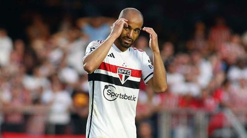

Lucas Moura


Monstro que fez uma virada histórica contra o Ajax na Champions League.

Lucas chegou ao São Paulo aos 13 anos de idade, ainda conhecido como Marcelinho.
Em agosto de 2023, após ficar três meses sem clube, Lucas acertou retorno ao São Paulo Futebol Clube, depois de onze anos de sua última passagem no clube. Com muita badalação e engajamento nas redes sociais, a contratação foi consolidada como a principal da janela de inverno no futebol brasileiro. O contrato prevê a permanência do jogador até o mês de dezembro no clube paulista.
Monstro que fez uma virada histórica contra o Ajax na Champions League.

Único argentino que merece respeito (logo depois do Messi).
Menino Mouse é um dos melhores pontas direita do Brasil!
Compadre Arboleda é bom de mais, o bicho é brabo!